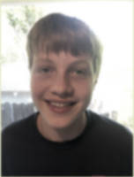
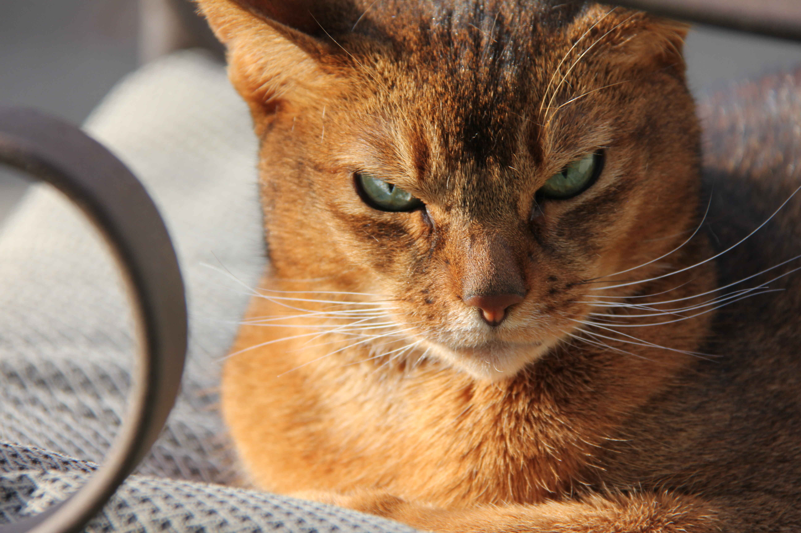
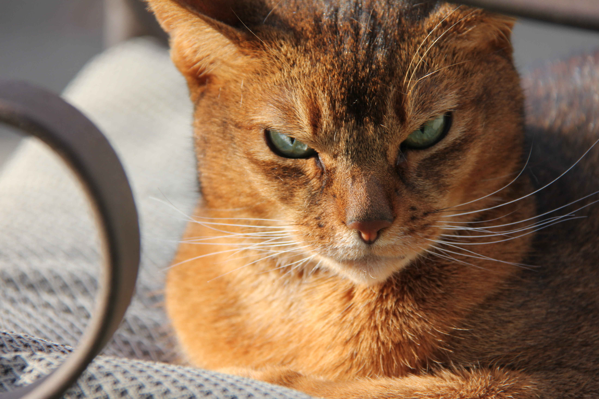

關於我
你好，我叫林斯文。 我是 Campolindo 高中的新生。 我喜歡閱讀、下棋、踢足球、 打網球和學習中文。 我有一個弟弟，還有一隻名叫Loki的貓。 我也在香港生活了兩年， 這就是我開始學習中文的原因。 我打算在大學繼續學習中文，也可能在台灣找到一份工作。
接下來請看一些我的中文作品，以及有幫助的資源。
你好，我叫林斯文。 我是 Campolindo 高中的新生。 我喜歡閱讀、下棋、踢足球、 打網球和學習中文。 我有一個弟弟，還有一隻名叫Loki的貓。 我也在香港生活了兩年， 這就是我開始學習中文的原因。 我打算在大學繼續學習中文，也可能在台灣找到一份工作。
接下來請看一些我的中文作品，以及有幫助的資源。
